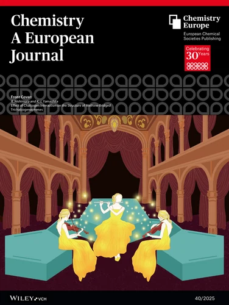
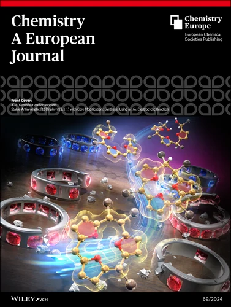
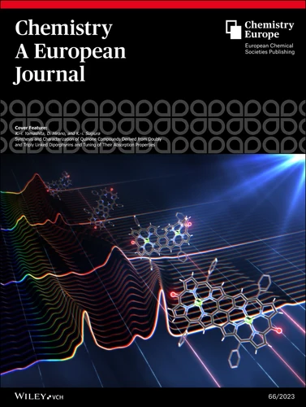
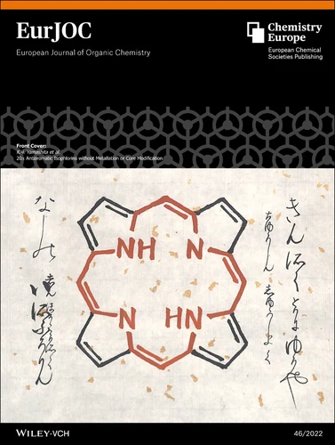
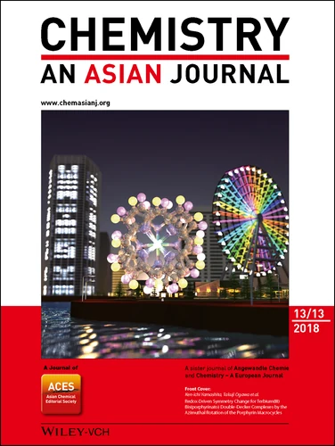

Gallery
Cover Art 論文の表紙
画像をクリックすると、表紙のページ(DOI)が開きます。

Cover Feature Chem. Eur. J. 2025, 31, e202501123Effect of Chalcogen Interaction on the Structure of Methine-Bridged Trichalcogenophenes

Front Cover Chem. Eur. J. 2024, 30, e202403097Stable Antiaromatic [16] Triphyrin (2.1.1) with Core Modification: Synthesis Using a 16π Electrocyclic Reaction

Cover Feature Chem. Eur. J. 2023, 29, e202302637Synthesis and Characterization of Quinone Compounds Derived from Doubly- and Triply-Linked Diporphyrins and Tuning of Their Absorption Properties

Front Cover Eur. J. Org. Chem. 2022, e20220074720π antiaromatic isophlorins without metallation or core modification

Front Cover Chem. Asian J. 2018, 13, 1692−1698Redox-Driven Symmetry Change for Terbium (III) Bis(porphyrinato) Double-Decker Complexes by the Azimuthal Rotation of the Porphyrin Macrocycles